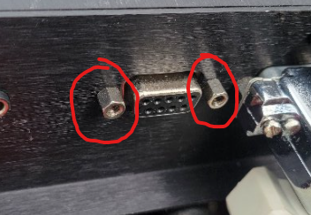
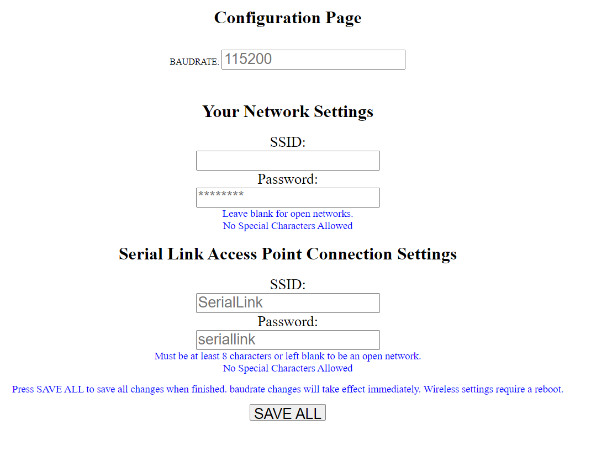

First things first you need to turn on your S-Link, The S-Link can accept power in one of two ways, if your using a Megasquirt chances are your ECU will provide the power needed through the Pin9 on the DB9 connector, if this is the case you simply plug in the S-Link to the db9 port, and it will turn on when you turn on the ECU.
If This is not the case and your ECU does not supply power through this port, then you will need to supply 5V power through the MicroUSB port on the side of the S-Link, this can be in the form of either a car USB charger, or a battery pack if you prefer.
On some ECUs it may be necessary to loosen the serial cable mounting standoffs located on both sides of the DB9 port. You only need to do this if the screws on the S-Link does not catch the threads, this may help. It is not required to use these screws and you may choose to not use them if the S-Link sits securely on the port.
They simply unscrew like a standard screw with a pair of pliers.
This is a simple way to understand what is going on in the S-Link,
The LED operation is very simple, it is a dim led located inside the casing so that you dont see too much of a blue glow when using the S-link at night, when you first power up the S-link the LED will turn on, this indicates that it has power and is booting, when it is finished booting and the WiFi access point is available to connect to, the LED will turn off.
When an application starts using the S-Link the LED will turn on to signal that a device is connected, and will turn off when the application is no longer talking through the S-Link and a different application can use it.
First, naturally you will need to turn the S-Link on, either by turning on your car's ignition or connecting power to the microUSB port.
On the device you wish to use with the serial link, open your WiFi page, and you will see the "Serial Link" network, this is the default network name for the S-Link. You can change this at a later time if you desire, along with the password.
If you want/need to use a serial cable to extend the location of the S-Link, or want to connect it to an existing extension it must be a STRAIGHT THROUGH cable. There exists a serial cable that is called a crossover cable, if you use such a cable it will switch the RX and TX ports causing the S-Link to not transfer any data between the network and the ECU. You will know if this is the case, as the S-Link will be powered and you will be able to connect to it, but no application will be able to connect to it and transfer data.
The default password to connect to the network is "seriallink"
once connected, it should say "connected without internet" or something similar. This is as expected and means you cannot visit any webpage, other than the SerialLink configuration page.
Lets take a quick moment to learn how to navigate the configuration page. By design the Configuration page is as simple as possible.
The configuration page can only be accessed if there is no application currently communicating over the S-Link network. If a device is actively communicating with the ECU using the S-Link the page will not load. This is to prevent potential data loss as well as allow for a faster data exchange rate.
To access the configuration page, you must first be connected to the S-Link. On the device connected to the S-Link you will want to open your web browser and navigate to the URL: "192.168.4.1". This page takes a few seconds after booting to become available, but you can refresh a few times and it will eventually load.
In the configuration Page you have 5 modifiable values, These are Baud Rate, your network ssid, your network password, device SSID, and device password, along with the save button of course.
Baud Rate The baud rate is the baud rate you need the S-Link to operate at, this number needs to match the detailed Baud Rate Determined by the ECU you are using. By default the S-Link is set with a baudrate of 115200, the default for Megasquirt 2 and 3.
Your Network SSID and Password These fields exist to establish a connection between the S-Link and your existing home network. This exists to allow the Device you are tuning with to download any ECU definition files it needs from the internet to read and write data from the ECU, This is only needed for the first time the application is used with the ECU, or if you do not wish to enter your network information, you can manually download the definition files and place them where needed, but this is just easier.
_NO SPECIAL CHARACTERS ARE ALLOWED TO BE ENTERED, IT WILL ONLY ACCEPT NUMBERS AND LETTERS. this is because the CPU in the S-Link does not like special characters and will get stuck in a boot loop if used. I may be able to change this in the future but as it stands now it is better to just avoid them completely. _
The S-Link does NOT need to be connected to an existing network to operate as a WiFi serial adapter.
Note: changing this setting requires a reboot to start working
Serial Link Access Point Connection Settings These fields exist to allow you to customize the S-Link name and password that you would use to connect to it in your devices WiFi connections screen.
NO SPECIAL CHARACTERS ARE ALLOWED TO BE ENTERED, Just like the fields above.
Note: after changing this setting, you will be kicked off the network and will need to reboot the device to connect to it with the new SSID / Password
The SAVE ALL button This is the save button, you MUST press this button for any changes to become active, Any baud rate changes will take effect as soon as you press the save button and will start communicating on the new bad rate from here out, any network changes will require a reboot of the S-Link to take effect.
Once the correct Baud rate is selected for the ecu you intend on using, you need to configure the wifi adapter settings in the application you want to use.
NOTE: To use WiFi adapters with TunerStudio, you need to have the paid version, the free TunerStudio does not allow you to use a WiFi adapter. The S-Link should work with any application or software that allows for use of WiFi/TCP/IP to rs232 adapters. This includes but is not limited to MSDroid, ShadowDashMS, and TunerStudio. At this point all three of these have been tested and work with the S-Link.
There are two pieces of information you need to enter into the app settings to allow the app to communicate through the Wifi Adapter.
These are known as the IP and PORT and are configurable in the app settings page of the application.
The IP of the S-Link is: 192.168.4.1 (The same IP as the configuration page) The PORT of the S-Link is: 23
These values are not changeable and will always be the values above.
NOTE: You can connect to the S-link with multiple devices at a time, but only one application can communicate with the S-Link at a time, you must disconnect the application before attempting connection with another, otherwise it will not communicate with it.
The S-Link software has an updating system built in to allow you to update the device yourself if I ever release a fix or change.
First things first, you will want to download the version of the firmware you want to install from the releases tab in this github repository.
To update the S-Link with the new software version, connect to the S-link on the device that you have the new firmware downloaded on. Navigate to your web browser and enter the following URL: “192.168.4.1/update” this will take you to the firmware update screen, there is two options on this menu, update the Firmware or upload files to the Filesystem.
For the S-Link there is no need to use the FileSystem option and you will only ever need to use the Firmware update. Under the Firmware section press the “Choose File” button and select the updated firmware that you downloaded, this file should end in the .bin extension. If you accidentally chose the wrong file, simply just hit the “choose File” button again until you select the right file, the filename should now be displayed next to the button. Once you have selected the correct file press the “Update Firmware” button and the S-Link will begin installing the new software update.
NOTE: The Serial Link page will appear to be hung up, this is normal, do NOT reload the page, the page will tell you when it is finished.
NOTE: Do not turn off power to the S-Link while it is updating, this would cause it to be unusable and the software would need to be manually flashed to the CPU.
Once the Upgrade is complete you are set to continue using the S-Link as needed.